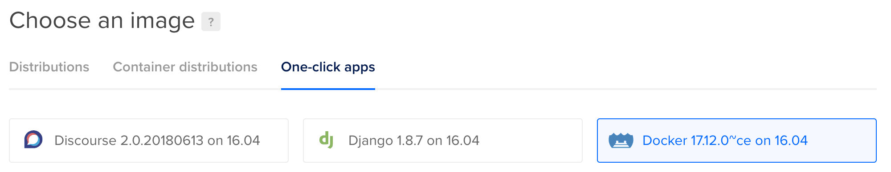
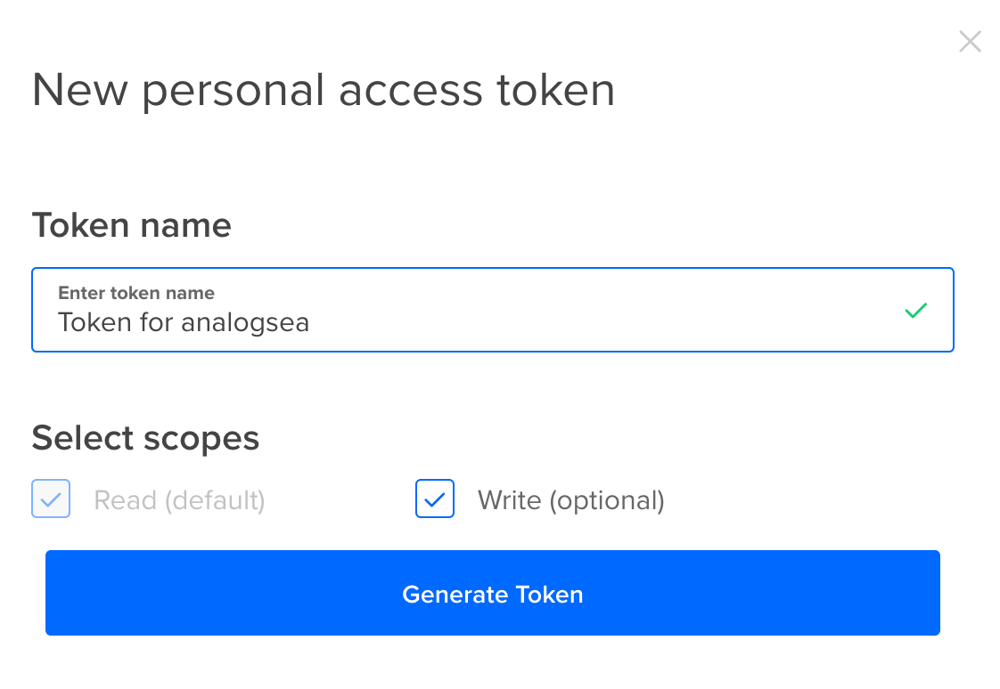
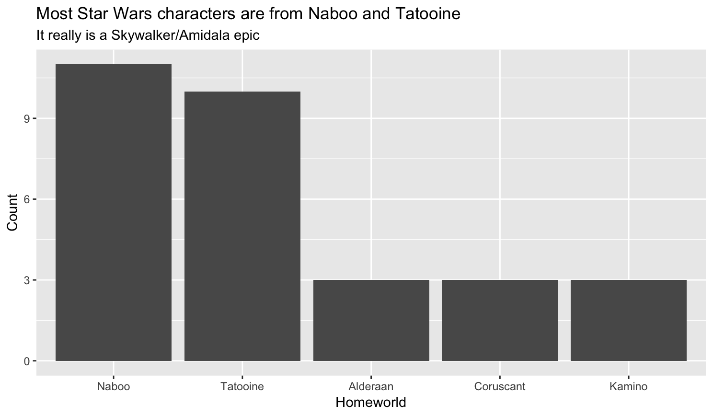

In one of my current research projects, I use Bayesian modeling (with Stan and rstanarm) and multiple imputation (with Amelia) to measure how international aid agencies change their funding allocations to countries that impose legal restrictions on NGOs. It’s a fascinating topic and I’m using exciting cutting edge research methods to do it.
However, these cutting edge research methods are really computationally intensive. On my laptop, using all four CPU cores, it takes ≈45 minutes to run one set of models (see h1.barriers.total <- mods.h1.next_year.raw.bayes.nested here, for instance), so with all the different model specifications and robustness checks, it takes hours to run the complete analysis for this project. It’s awful and I hate rerunning it.
In the past, I created several DigitalOcean droplets (what they call virtual private servers), installed RStudio Server on each, uploaded my data to each instance, and ran separate models on each. This reduced computation time, since I could have like 5 computers all running different parts of the analysis, but it required a ton of manual work and oversight. Computers are really good at automating stuff, and tools like Slurm and Hadoop and Kubernetes all allow you to orchestrate computing across clusters of machines. However, because these tools are powerful, they’re also really complicated and require a lot of additional configuration, and the tradeoff between teaching myself Kubernetes vs. just doing it all manually wasn’t that favorable.
The key to all of this working correctly is the future package in R. future allows you to evaluate R commands and expressions in separate processes.
For instance, ordinarily, when you run this command, x gets assigned a value immediately:
x <- {
cat("Something really computationally intensive\n")
10
}
#> Something really computationally intensive
x
#> [1] 10
The stuff in cat() gets printed immediately and the value of 10 is assigned to x immediately as well. This is all well and good, but if the command is computationally intensive, you have to wait until it’s done before doing anything else in R.
future includes a special assignment command %<-% that delays evaluation until x is called.
library(future)
x %<-% {
cat("Something really computationally intensive\n")
10
}
x
#> Something really computationally intensive#> [1] 10
Notice how cat() isn’t run until x is run. That’s because the whole expression isn’t actually run yet—it isn’t evaluated until x is called.
The magic of future is that this deferred evaluation can automatically happen anywhere else. You specify where evaluation happens with future::plan(). For instance, if you want x to be handled on multiple CPUs on your local computer, you’d do this:
library(future)
plan(multiprocess)
x %<-% {
cat("Something really computationally intensive\n")
10
}
x
#> Something really computationally intensive#> [1] 10
R now uses multiple cores to create x.
Or, if you want x to be processed on a cluster of three remote computers, you’d do this:
x is now created across three computers automatically.
future has functions like future.apply::future_lapply() that allow you to apply functions to lists, just like lapply() and friends in base R, and the furrr package has futurized functions like future_map() that are equivalent to map() and friends in purrr. The future_* versions of these functions will automatically take advantage of whatever you’ve specified in plan(). If you use plan(multiprocess), future_map() will automatically send chunks of computations to each of the CPU cores; if you use plan(remote), future_map() will automatically send chunks of computations to each of the remote computers.
This is seriously magic and incredible. The backend you specify with plan()doesn’t matter and you can change it later to anything you want without having to change your code.
1. Create remote computers that have the correct R environment and packages set up already
1.1. Create a remote computer (or two or three)
First, you need a remote computer. I prefer to use DigitalOcean, mostly because I already use it for my personal web hosting and other personal projects, and because I find it way more intuitive and easy to use than Amazon’s EC2 (which, like Kubernetes, et al. is incredibly powerful, but incredibly complicated). But you can also do all of this with AWS, Linode, Google Cloud Platform, or any other VPS service (here’s how to do it with AWS and with Google Cloud). The magic of future is that it doesn’t matter what backend you use—the package takes care of everything for you.
Create an SSH key pair between your DigitalOcean account and your computer. Follow the instructions here to create SSH keys and then upload the public keys to your account. Setting up SSH keys like this lets you securely access your remote computer without a password, which is nice when running remote computations from R.
In your DigitalOcean account, create a new Droplet. For simplicity’s sake, you can use the “One-click apps” tab to create a computer that has Docker pre-installed.

Choose how big you want the droplet to be. For now, we’ll just make a small $5/month VPS, but you can get as fancy as you want in real life.
Check the box near the bottom to add your SSH key to the VPS automatically.
All done! Take note of the IP address. You can connect to the machine now with a terminal with ssh root@IPADDRESS if you want, but you don’t need to.
You can automate all this with the analogsea package in R. Create an API key in your DigitalOcean account:

Then edit ~/.Rprofile (or create a new file there, if needed) and add this line:
Sys.setenv(DO_PAT ="KEY_GOES_HERE")
Now, you can use R to create DigitalOcean droplets, like so:
library(tidyverse)
library(analogsea)
# droplet_create() makes a generic Linux VPS
remote_computer <-droplet_create(region ="sfo2", size ="1gb")
# Or...# docklet_create() makes a Linux VPS with Docker pre-installed
remote_computer <-docklet_create(region ="sfo2", size ="1gb")
1.2. Make sure the remote computer has the correct R environment and packages
The computers you specify in plan(remote, workers = "blah") need to (1) have R installed, and (2) have all the packages installed that are needed for the computation. You can manually install R and all the needed packages, but that can take a long time and it’s tedious. If you need a cluster of 6 computers, you don’t want to take an hour to install R on each of them (and wait for all the packages to compile).
The easiest way to get a ready-to-go R environment is to use Docker. I won’t cover the details of Docker here (since I’ve done that already)—essentially, Docker lets you install pre-configured virtual computers instantly. For example, rocker/rbase is a Linux machine with R preinstalled, and rocker/tidyverse is a Linux machine with R + RStudio server + tidyverse pre-installed. You can also create project-specific environments like this one for my donors-NGOs project, and you can use R packages like containerit to automatically create a Dockerfile out of your current R environment. It’s probably best to make your own custom Docker image for your own projects if you use any packages beyond what’s in the default rbase or tidyverse images.
To get a Docker image onto your remote computer, log into the computer with ssh root@IPADDRESS in your terminal and run docker pull rocker/tidyverse.
You can do this to create as many remote computers as you want.
The first time you run docklet_pull() on a droplet, Docker will download hundreds of megabytes of container files. This is fine for one computer, but if you’re creating a cluster of multiple computers, you might not want to redownload everything every time on each computer (to avoid extra bandwidth charges, for example). Instead of pulling a fresh Docker image on each computer, you can take a snapshot of the first remote droplet and then make new droplets based on the snapshot:
# Create new droplet with rocker/tidyverse
remote_computer <-docklet_create(region ="sfo2", size ="1gb")
droplet(remote_computer$id) %>%docklet_pull("rocker/tidyverse")
# Create snapshotdroplet(remote_computer$id) %>%droplet_power_off() %>%droplet_snapshot(name ="tidyverse_ready") %>%droplet_power_on()
# Create a new droplet based on this snapshot. This new computer will already# have rocker/tidyverse on it## You can see a list of available snapshots and get the name/id with# images(private = TRUE)
remote_computer2 <-droplet_create(image ="12345678",
region ="sfo2", size ="1gb")
# This won't take long because it already has rocker/tidyverse# You should get this message:# Status: Image is up to date for rocker/tidyverse:latestdroplet(remote_computer$id) %>%docklet_pull("rocker/tidyverse")
Just make sure you delete the snapshots when you’re done—they cost $0.05 per GB per month.
2. Use future::plan() to point R to those computers
We can now point R to this remote computer (or remote computers) and have future automatically use the Docker-installed R.
If we didn’t use Docker and instead installed R on the remote machine itself, all we’d need to do is run this in R:
plan(remote, workers ="IP ADDRESS HERE")
However, because R lives inside a Docker image, we need to do a tiny bit of extra configuration on the local computer—we have to tell the remote computer how to turn on and access the R Docker image. We do this by defining a cluster. Here’s a heavily commented example of how to do that:
# Public IP for droplet(s); this can also be a vector of IP addresses
ip <- IP_ADDRESS_HERE
# Path to private SSH key that matches key uploaded to DigitalOcean
ssh_private_key_file <-"/Users/andrew/.ssh/id_rsa"# Connect and create a cluster
cl <-makeClusterPSOCK(
ip,
# User name; DigitalOcean droplets use root by default
user ="root",
# Use private SSH key registered with DigitalOcean
rshopts =c(
"-o", "StrictHostKeyChecking=no",
"-o", "IdentitiesOnly=yes",
"-i", ssh_private_key_file
),
# Command to run on each remote machine# The script loads the tidyverse Docker image# --net=host allows it to communicate back to this computer
rscript =c("sudo", "docker", "run", "--net=host",
"rocker/tidyverse", "Rscript"),
# These are additional commands that are run on the remote machine. # At minimum, the remote machine needs the future library to work—installing furrr also installs future.
rscript_args =c(
# Create directory for package installation"-e", shQuote("local({p <- Sys.getenv('R_LIBS_USER'); dir.create(p, recursive = TRUE, showWarnings = FALSE); .libPaths(p)})"),
# Install furrr and future"-e", shQuote("if (!requireNamespace('furrr', quietly = TRUE)) install.packages('furrr')")
),
# Actually run this stuff. Set to TRUE if you don't want it to run remotely.
dryrun =FALSE
)
With this cluster defined, we can now use it in future::plan():
plan(cluster, workers = cl)
And that’s it! future is now ready to run commands on the remote computer.
3. Run R commands on those computers with future::future_lapply() or furrr::future_map()
Now we can run future-based commands on the remote computer with %<-%. First, let’s check the remote computer’s name:
# Verify that commands run remotely by looking at the name of the remote# Create future expression; this doesn't run remotely yet
remote_name %<-% {
Sys.info()[["nodename"]]
}
# Run remote expression and see that it's running inside Docker, not locally
remote_name
#> [1] "docker-s-1vcpu-2gb-sfo2-01"
How many CPUs does it have?
# See how many CPU cores the remote machine has
n_cpus %<-% {parallel::detectCores()}
n_cpus
#> [1] 1# Just one, since this is a small machine
We can now outsource any command we want to the remote computer. We don’t even have to transfer data manually to the remote—future takes care of all of that automatically:
# Do stuff with data locally
top_5_worlds <- starwars %>%filter(!is.na(homeworld)) %>%count(homeworld, sort =TRUE) %>%slice(1:5) %>%mutate(homeworld =fct_inorder(homeworld, ordered =TRUE))
# Create plot remotely, just for fun
homeworld_plot %<-% {
ggplot(top_5_worlds, aes(x = homeworld, y = n)) +geom_bar(stat ="identity") +labs(x ="Homeworld", y ="Count",
title ="Most Star Wars characters are from Naboo and Tatooine",
subtitle ="It really is a Skywalker/Amidala epic")
}
# Run the command remotely and show plot locally# Note how we didn't have to load any data on the remote machine. future takes# care of all of that for us!
homeworld_plot

In addition to %<-%, we can use functions like furrr::future_map() to run functions across a vector of values. Because we’re only running one remote computer, all these calculations happen on that remote image. If we used more, future would automatically dispatch different chunks of this code across different computers and then reassemble them locally. Anything you can do with furrr or future can now be done remotely.
# Multiply the numbers 1-5 by 10000 random numbers# All these calculations happen remotely!future_map(1:5, ~rnorm(10000) * .x)
#> [[1]]#> [1] -6.249602e-01 1.949156e+00 2.205669e+00 4.525842e-01#> ...
You can even nest future plans by specifying them in a list, and the package will take care of the different nested layers automatically. You can also place plan(list(...)) in a file named .future.R, which future will source automatically when it is loaded. This allows you to use different plans on different computers without ever changing your code.
plan(list(
tweak(cluster, workers = cl), # Use a cluster of computers locally
multiprocess # Use all the CPUs on remote machines
))
complicated_remote_stuff %<-% {
# Do complicated stuff on all the remote CPUs with future or furrr functionsfuture_map(1:5, ~rnorm(10000) * .x)
}
complicated_remote_stuff
#> [[1]]#> [1] -4.746093e-02 1.874897e+00 1.679342e+00 -5.775777e-01#> ...
4. Throw away the remote computers when you’re done
Because we’ve used Docker-based R installations, spinning up new droplets is trivial—you don’t have to manually install R and all the packages you need by hand. All these remote images are completely disposable.
Once you’re done running stuff remotely, you can delete the droplets and save money. Either delete them through the DigitalOcean dashboard, or use analogsea:
droplet_destroy(remote_computer$id)
5. That’s all!
Phew. That’s all! This is a lot easier than figuring out how to orchestrate Docker images with Kubernetes or figuring out how to create Hadoop clusters. future takes care of all the hard work behind the scenes and this all Just Works™.
Full example
Here’s a real-life example of using Stan to estimate a bunch of models on a cluster of two 4-CPU, 8 GB RAM machines. It uses the andrewheiss/docker-donors-ngo-restrictions Docker image because it already has Stan and family pre-installed. Each machine costs $0.06 per hour to run, so it’s essentially a cheap, fast, remote, and disposable supercomputer.
# Load libraries ----------------------------------------------------------library(tidyverse)
library(analogsea)
library(broom)
library(rstanarm)
library(gapminder)
library(tictoc)
library(ggstance)
# Path to private SSH key that matches key on DigitalOcean
ssh_private_key_file <-"/Users/andrew/.ssh/id_rsa"# Set up remote machines --------------------------------------------------# Create two new droplets with Docker pre-installed# Here I'm using "s-4vcpu-8gb", which has 4 CPUs and 8 GB of RAM.# Run analogsea::sizes() to see all the available sizes
droplet1 <-docklet_create(region ="sfo2", size ="s-4vcpu-8gb")
droplet2 <-docklet_create(region ="sfo2", size ="s-4vcpu-8gb")
# Pull the docker image with the environment for this project## Here I'm using andrewheiss/docker-donors-ngo-restrictions because it already# has rstan and friends installed; none of the rocker R images do that## NB: Wait for a minute before running this so that Docker is ready to# run on the remote machinesdroplet(droplet1$id) %>%docklet_pull("andrewheiss/docker-donors-ngo-restrictions")
droplet(droplet2$id) %>%docklet_pull("andrewheiss/docker-donors-ngo-restrictions")
# Get IP addresses
ip1 <-droplet(droplet1$id)$networks$v4[[1]]$ip_address
ip2 <-droplet(droplet2$id)$networks$v4[[1]]$ip_address
ips <-c(ip1, ip2)
# Make remote cluster -----------------------------------------------------# Command to run on each remote machine# The script loads the docker-donors-ngo-restrictions Docker image# --net=host allows it to communicate back to this computer
rscript <-c("sudo", "docker", "run", "--net=host",
"andrewheiss/docker-donors-ngo-restrictions", "Rscript")
# Connect and create a cluster
cl <-makeClusterPSOCK(
ips,
# User name; DO droplets use root by default
user ="root",
# Use private SSH key registered with DO
rshopts =c(
"-o", "StrictHostKeyChecking=no",
"-o", "IdentitiesOnly=yes",
"-i", ssh_private_key_file
),
rscript = rscript,
# Things to run each time the remote instance starts
rscript_args =c(
# Set up .libPaths() for the root user and install future/purrr/furrr packages# Technically future and furrr are already installed on # andrewheiss/docker-donors-ngo-restrictions, so these won't do anything"-e", shQuote("local({p <- Sys.getenv('R_LIBS_USER'); dir.create(p, recursive = TRUE, showWarnings = FALSE); .libPaths(p)})"),
"-e", shQuote("if (!requireNamespace('furrr', quietly = TRUE)) install.packages('furrr')"),
# Make sure the remote computer uses all CPU cores with Stan"-e", shQuote("options(mc.cores = parallel::detectCores())")
),
dryrun =FALSE
)
# Use the cluster of computers as the backend for future and furrr functionsplan(cluster, workers = cl)
# We'll use gapminder data to estimate the relationship between health and # wealth in each continent using a Bayesian model# Process and manipulate data locally# Nest continent-based data frames into one larger data frame
gapminder_to_model <- gapminder %>%group_by(continent) %>%nest() %>%# Not enough observations here, so ignore itfilter(continent !="Oceania")
gapminder_to_model
#> # A tibble: 4 x 2#> continent data #> <fct> <list> #> 1 Asia <tibble [396 × 5]>#> 2 Europe <tibble [360 × 5]>#> 3 Africa <tibble [624 × 5]>#> 4 Americas <tibble [300 × 5]> # Fit a Bayesian model with naive normal priors on the coefficients and# intercept on each of the continents. In real life, you'd want to use less# naive priors and rescale your data, but this is just an example.
model_to_run <-function(df) {
model_stan <-stan_glm(lifeExp ~ gdpPercap + country,
data = df, family =gaussian(),
prior =normal(), prior_intercept =normal(),
chains =4, iter =2000, warmup =1000, seed =1234)
return(model_stan)
}
# Use future_map to outsource each of the continent-based models to a different# remote computer, where it will be run with all 4 remote corestic()
gapminder_models <- gapminder_to_model %>%mutate(model = data %>%future_map(~model_to_run(.x)))
toc()
#> 27.786 sec elapsed# That's so fast!# It worked!
gapminder_models
#> # A tibble: 4 x 3#> continent data model #> <fct> <list> <list> #> 1 Asia <tibble [396 × 5]> <S3: stanreg>#> 2 Europe <tibble [360 × 5]> <S3: stanreg>#> 3 Africa <tibble [624 × 5]> <S3: stanreg>#> 4 Americas <tibble [300 × 5]> <S3: stanreg># Do stuff with the models ------------------------------------------------# Extract the gdpPercap coefficient from the rstanarm models
gapminder_models_to_plot <- gapminder_models %>%mutate(tidied = model %>%map(~tidy(.x, intervals =TRUE, prob =0.9))) %>%unnest(tidied) %>%filter(term =="gdpPercap")
# Plot the coefficientsggplot(gapminder_models_to_plot, aes(x = estimate, y = continent)) +geom_vline(xintercept =0) +geom_pointrangeh(aes(xmin = lower, xmax = upper, color = continent), size =1) +labs(x ="Coefficient estimate (log GDP per capita)", y =NULL,
caption ="Bars show 90% credible intervals") +scale_color_viridis_d(begin =0, end =0.9, name =NULL) +theme_grey() +theme(legend.position ="bottom")